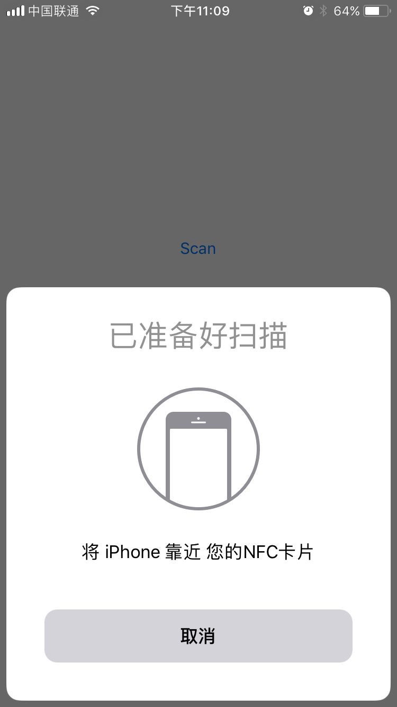
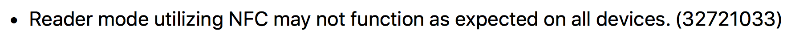

最近北京地铁在房山线试运行手机刷卡，实际上就是手机支持NFC功能的方便了，鉴于市场上主流的手机都支持全功能NFC，以后出门忘记带乘车卡也可以坐地铁了，不过iPhone用户此时比较心塞，由于iPhone安全策略一直没有开放NFC功能提供开发者使用。BUT，WWDC17带来了众多功能中的NFC功能，本文在iOS11 beta版本上做一个小小的测试，看看功能如何。
要求
- iOS11
- iPhone7 or iPhone7 Plus
- Xcode 9 Beta
小试
Talk is cheap, show me the code.
查看详细文档说明请 移步文档
1.梳理一下文档
CoreNFC.framework主要包含以下几个类/协议:
|
|
想要实现读取NFC功能，需要创建一个读取NFC功能的实例，查文档NFCReaderSession 基类不能够具体的实例化，可以借助它的子类 NFCNDEFReaderSession 来创建实例，此外还需要提供一个能接收回调的对象来接收NFC读取到的数据。苹果为我们提供了一个目前唯一一个工厂方法：
|
|
2.建立一个工程
注意：这里你需要一个付费的开发者账号，如果你使用免费的开发者账号是无法开发NFC功能的。
我的工程名HBNFC，配置工程。
打开工程的读取功能，此时功能中会出现一个以工程名称命名的后缀是
entitlements的文件，内部包含了一对数据:1234<key>com.apple.developer.nfc.readersession.formats </key><array><string>NDEF</string></array>在
Infor.plist中添加一对儿NFC读取描述:12<key>NFCReaderUsageDescription</key><string>您的NFC卡片</string>
声明属性，將ViewController对象接收读取数据的回调信息：
|
|
添加一个按钮，按钮点击时创建获取NFC数据实例。
|
|
注意：每一次只能有一个实例读取数据，读取时间60s，超时后只能重新创建实例读取。
我的工程跑起来后点击按钮后的样子:

当我满心欢喜将公交卡贴近手机的时候，无论如何都没有log，此时可能是小弟姿势不对了？然后查看了 iOS11 Realse Notes:

到此，只是NFC功能小试结束(为了凑篇幅心虚的贴了大段大段代码)，目前Apple只开放了NFC读取的权限，相信在合适的时候还会开放更多功能。
以上：如果有错误或者任何问题欢迎指正(评论系统集成的Disqus，所以你可能看不见🙈🤷♂️)！！！
如果你还没有顺手的科学上网工具，推荐一个我正在用的SSR服务, 多条线路可供选择使用，一年不限流量 ¥200 。现在购买的时候输入优惠码 qj80 还享受 八折 优惠！